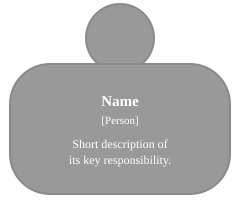
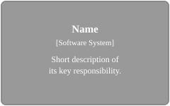
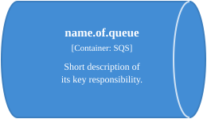
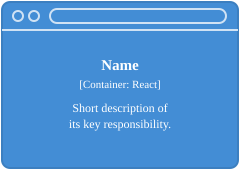
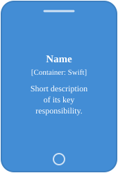
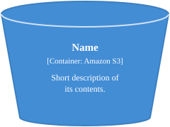
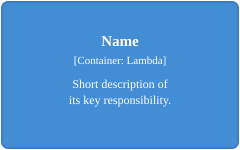
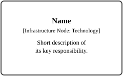
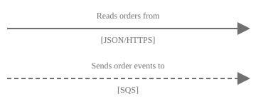
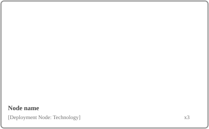

C4 Modeller
Builds C4 architecture models as data in Structurizr DSL, answers questions scoped to a C4 level, and hands the model to whatever presents it. It never draws diagrams itself.
Why C4: the level names are a shared vocabulary for detail. "What are the inputs to the rendering engine?" invites a wall of text. "What are the inputs to the rendering engine at the C4 container level?" says which elements to consider and how much to say.
workspace extends file, so adding a renderer never changes this skill.Quick start
/c4-modeller model this repo/c4-modeller what are the inputs to the API at the C4 container level?/html-artefact c4 model for the system using /c4-modeller/c4-modeller user-guideThe first word picks the mode. Without one, the skill infers it: a question goes to ask, "review" or "check" to review, "add" or "sync" with an existing model to update, talk of shapes or styling to notation, and anything else to model.
Modes
| Mode | What it does | Try |
|---|---|---|
model | Builds a new model from a codebase, documents, an existing diagram or a description. Defaults to system context and container levels, plus deployment when deployment configuration exists. | model the billing service at all levels |
update | Changes an existing model: adds components to a container, a deployment environment or a dynamic flow; edits elements; resyncs with the code. Keeps identifiers and view keys stable. | update add components for the API |
ask | Answers a question scoped to a C4 level, or a question about C4 itself. Writes nothing. | is S3 a container? |
review | Validates a model and checks it against C4 rules and, on request, against the code. "fix" applies the findings. | review against code |
notation | Returns the notation rules, standard shapes and default colours for drawing a model, and maps a model's elements to shapes. | notation for docs/architecture/workspace.dsl |
user-guide | Starts a local web server for this guide and opens it. | user-guide |
Composing with other skills
The skill is a model provider. Another skill asks for a model, gets a validated workspace back, and owns every visual decision.
- The calling skill invokes
c4-modeller(usuallymodel). - The model is written to
tmp/c4/<system>/workspace.dslin the caller's working directory, withworkspace.jsonbeside it. - The skill returns a hand-off block: paths, validation result, levels, a table of views, assumptions and what was not modelled.
- The caller reads the DSL or the JSON (where every view's elements are already resolved) and draws what it needs. It may run
notationfor standard shapes.
## C4 model
- Workspace: tmp/c4/content-forge/workspace.dsl
- JSON: tmp/c4/content-forge/workspace.json
- Validation: ok
- System in scope: Content Forge (contentForge)
- Levels modelled: system context, container, deployment (Live)
| View key | Type | Scope | Shows |
|----------------|----------------|--------------|-----------------------------|
| system-context | System context | contentForge | Editors and the AI APIs |
| containers | Container | contentForge | SPA, API Worker, D1, R2 |
- Assumptions: none
- Not modelled: stubbed integrations, unused bindingsOutputs and validation
| Situation | Where the model goes |
|---|---|
| You name a path | That path |
| Another skill or a presentation request drives the call | tmp/c4/<system>/workspace.dsl plus workspace.json |
| Anything else | docs/architecture/workspace.dsl |
Every write is checked by scripts/validate.sh, which uses a local Structurizr CLI or the structurizr/structurizr Docker image.
| Exit | Meaning |
|---|---|
| 0 | Valid Parses and passes the C4 inspections |
| 1 | Parse error The message names the line |
| 2 | Inspections Missing descriptions, technologies or relationship detail |
| 3 | No tooling Neither a Structurizr CLI nor Docker is available |
bash skills/c4-modeller/scripts/validate.sh docs/architecture/workspace.dsl --json docs/architecture/workspace.jsonAbstractions
A software system is made of containers; a container is made of components; a component is implemented by code. People use software systems. These meanings come from c4model.com and the skill never stretches them.
| Abstraction | Meaning | Is not |
|---|---|---|
| Person | An actor, role or persona who uses the software | The team that builds it |
| Software system | Something that delivers value to its users; typically what one team owns and can see inside | A domain, bounded context, business capability or squad |
| Container | An application or data store that must be running for the system to work: a web app, SPA, mobile app, function, database schema, bucket, queue | A Docker container, a JAR or library, a whole message broker |
| Component | Related functionality behind a well-defined interface, inside one container; not separately deployable | A class, a folder, a running process |
| Code | Classes, functions and tables that implement a component; drawn in UML | Anything in the DSL; the DSL has no code level |
Levels as a lens
Naming a level fixes which elements are in play and how much detail to give. Use it in any request to an agent.
| At the … level | Consider | Give | Leave out |
|---|---|---|---|
| System context | The system, its users, the systems it talks to | Purpose and the business information flowing in and out | Technology, protocols, anything inside a system |
| Container | Containers in the system, plus connected people and systems | Responsibilities, technology choices, domain data between containers, protocols | Classes, endpoints, payloads, field lists, hosting topology |
| Component | Components in one container, plus what they connect to | Responsibilities, named operations, dependencies, frameworks | Class lists, method signatures, field-level schemas |
| Code | Code inside one component | Classes, functions, signatures, tables | Anything outside the component |
| Deployment | Nodes, infrastructure and instances in one environment | Where containers run, node technology, instance counts | Business logic, component internals |
Scope: Rendering Engine (container, Node.js worker) in Report Builder, at container level.
| From | Type | What flows | Via |
|--------------------|------------------------|---------------------------------|------------------------|
| Report API | Container (Node.js) | Render jobs | SQS (render.requested) |
| Template Store | Container (Amazon S3) | Report templates, brand assets | AWS SDK/HTTPS |
| Reporting Database | Container (PostgreSQL) | The report's figures | SQL |"Inputs" and "outputs" follow data flow, whoever starts the call. "Depends on" and "calls" follow the caller.
Diagram types
| Diagram | Scope | Audience | Recommended |
|---|---|---|---|
| System landscape | An organisation or department | Everyone | For portfolios of systems |
| System context | One software system | Everyone, technical or not | Always |
| Container | One software system | Architects, developers, operations | Always |
| Component | One container | Architects and developers | When it adds value |
| Code | One component | Developers | Rarely; IDEs generate it |
| Dynamic | One feature or use case | Everyone | Sparingly, for complex flows |
| Deployment | One environment | Technical people, operations | Yes |
System context plus container is enough for most teams.
Classification rules
Ownership and runtime boundaries decide what a thing is, not its technology.
- Microservices. One team: each service is a group of containers (API plus its database) inside one system. Separate teams: each service is its own software system.
- Server app with an SPA. Two containers, because they run in separate processes.
- Managed data stores (S3, RDS, D1, Supabase Postgres) are containers: you own the bucket or schema.
- Third-party APIs you only call (Stripe, an LLM provider) are external software systems, shown as black boxes.
- Message brokers. Each queue or topic is a container; the broker itself is not.
- Libraries and SDKs are not containers; they are code inside containers.
- Infrastructure (load balancers, gateways, DNS, cron triggers) belongs in deployment models as infrastructure nodes.
- AI agents. The agent process is a container; its tools and planner are components; the model API is an external system.
Anti-patterns
| Avoid | Instead |
|---|---|
| Invented levels ("subsystem", "level 2.5") | The nearest real level, with a group if grouping helps |
| A message broker as one hub box | One container per queue or topic |
| Internals of an external system | One black-box software system |
| "Uses" as a relationship label | Say what flows: "Fetches account balances from" |
| Bidirectional arrows | Two arrows, each labelled from its source |
| Infrastructure in a container diagram | A deployment diagram for a named environment |
| More than 20 elements in one view | Focused views by group or by one element and its neighbours |
Component gallery
Standard shapes for presenting a model, picked from an element's C4 type and its tag. They use the classic C4 palette; each colour is a --c4-* CSS variable a presenter can map onto its own tokens. Code level uses UML.

A user role or actor. person.svg

Tag External. person-external.svg

The system in scope. software-system.svg

Tag External. software-system-external.svg

An app or service. container.svg

Tag Database. database.svg

Tag Queue or Topic. queue.svg

Tag Web Browser, for SPAs. web-browser.svg

Tag Desktop App. desktop-app.svg

Tag Mobile App. mobile-app.svg

Tag File Store. file-store.svg

Tag File Store. bucket.svg

Tag Function. container-function.svg

Inside one container. component.svg

Load balancer, gateway, DNS. infrastructure-node.svg

Solid for synchronous, dashed for asynchronous. relationship.svg

The system or container in scope. boundary.svg

Elements at one level, grouped. group.svg

Where instances run; nests. deployment-node.svg
Notation rules
- Every diagram has a title naming its type and scope, and a legend for every shape, colour and line style used.
- Every element shows its name, its type and technology in brackets (
[Container: PostgreSQL]) and a short description. - Every line points one way and says what flows; between containers it also gives the protocol in brackets.
- Colour is never the only signal: the shape and the type label still work in black and white.
- Fill darkens as you zoom out: person and system darkest, component lightest.
- No more than 20 elements on one diagram.
The full guidelines, including the colour variables, are in references/notation.md.
Files in the skill
| File | Holds |
|---|---|
SKILL.md | Modes, dispatch and composition |
cookbook/*.md | One recipe per mode, plus shared rules in preferences.md |
references/c4-model.md | Abstractions, classification rules, levels, anti-patterns |
references/structurizr-dsl.md | The DSL subset, syntax rules, tags and view keys |
references/example.dsl | A complete validated model at every level |
references/notation.md | Notation rules, shapes and default colours |
references/shapes/ | The standard shapes as SVG, with index.html |
scripts/validate.sh | Parse, inspect and export a workspace |
guide/ | This guide and its copy of the design system CSS |